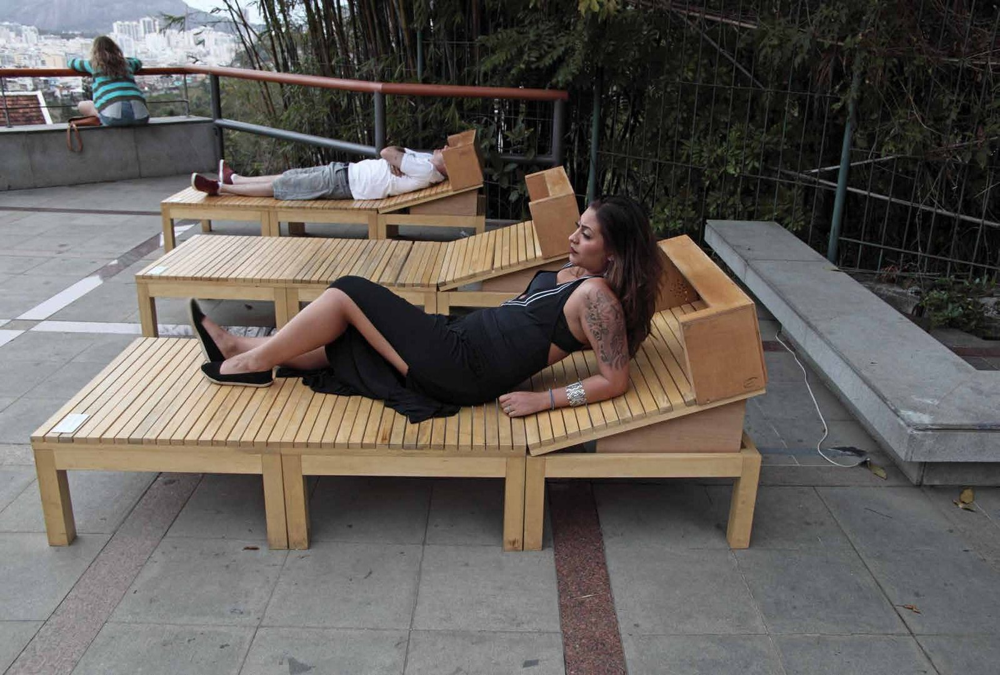
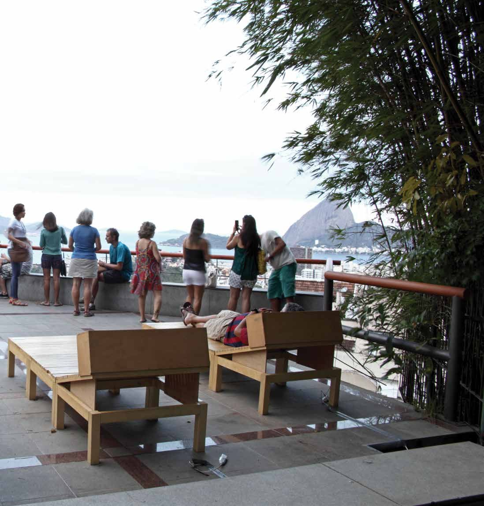
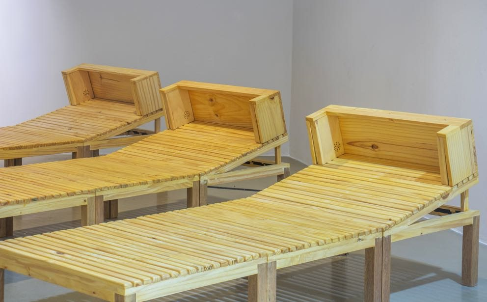
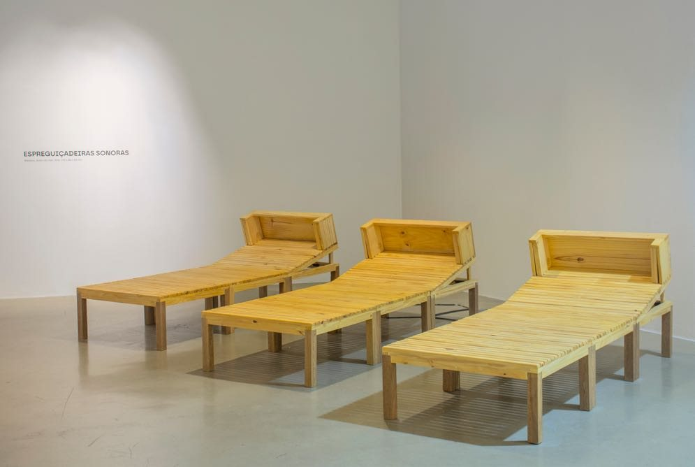

Espreguiçadeiras Sonoras
Use headphones
Wooden deckchairs with recordings of the sea. Shown in the exhibition Muro de Som, Parque das Ruínas (2016), and in A Pele do Mundo, Futuros – Arte e Tecnologia (2023).
- Materials
- Wood, recording of the sea
- Dimensions
- 210 × 84 × 83 cm
- Venue
- Parque das Ruínas, Rio de Janeiro (2016); Futuros – Arte e Tecnologia (2023)
- Exhibition
- Muro de Som (2016), A Pele do Mundo (2023)
- Group exhibition
- Virada Sônica: The Sonic Turn — The Surge of Sound in Contemporary Art (2024)



